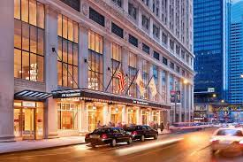

Accommodations in Chicago
Choose from the following types of accommodations:
Discover a variety of comfortable accommodations in the heart of Chicago. Whether you're here for business or leisure, we have options to suit your needs. Chicago has many different types of stays and experiences. You can choose your hotel based on where you want to go and what you want to see. It is up to you to decide on a hotel to stay at.
- Sofitel Chicago Magnificent Mile: A 4-star hotel with French-inspired elegance. Enjoy free breakfast, Wi-Fi, and room service.
- JW Marriott Chicago: A 5-star stay with an on-site spa, indoor pool, and Italian restaurant.
- Hotel Felix: Located in Chicago’s vibrant River North neighborhood, this eco-friendly hotel is within walking distance of the unique shops and top restaurants on the Magnificent Mile. Free WiFi is available.
- The Langham, Chicago: A luxurious 5-star hotel with stunning views of the Chicago River and city skyline.
- The Gwen, a Luxury Collection Hotel, Michigan Avenue Chicago: Experience timeless elegance in this historic landmark hotel, steps away from the Magnificent Mile.
- The Wit Chicago, a DoubleTree by Hilton Hotel: Modern luxury meets vibrant nightlife at this centrally located hotel.
- Cambria Hotel Chicago Magnificent Mile: blends contemporary style and comfort, providing a chic urban retreat in the heart of the iconic Magnificent Mile
- The Hilton, Chicago: Offers luxurious accommodations with stunning city views, combining modern elegance with a prime downtown location
- Radisson Blu Aqua Hotel, Chicago: Situated in Chicago’s Lakeshore East neighborhood, this luxury hotel is located in the modern Aqua building
- Millennium Knickerbocker Hotel Chicago: the epitome of classic Chicago style, located near Magnificent Mile in downtown Chicago
.jpg)
hotel
